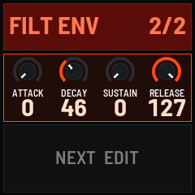
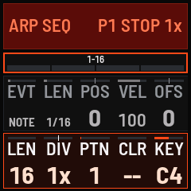
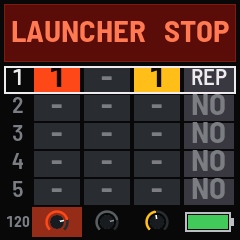
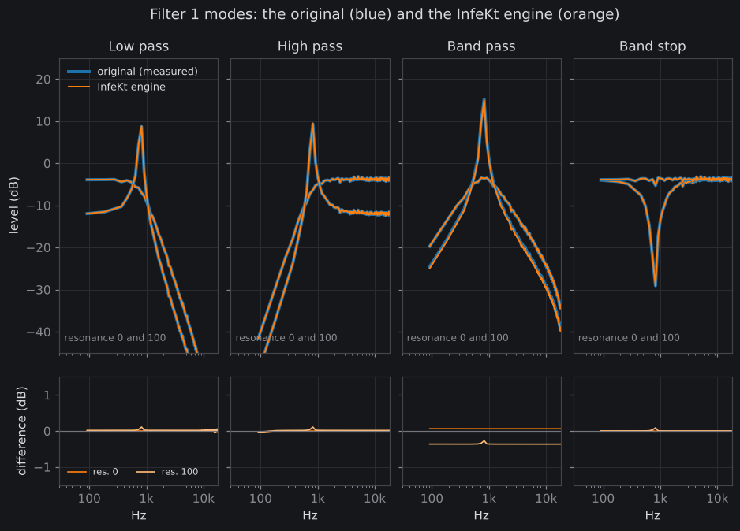

InfeKt-FM1
A virtual analog synthesizer firmware for the M-VAVE FM-1 · version 1.19



It was about time: the InfeKt-FM1 is finally released. It turns the small FM-1 into a full virtual analog synthesizer whose sound comes very close to the original, and it is compatible with Virus patches.
What the InfeKt-FM1 cannot give you is the incomparable hands-on feel of the original. That is why I very much hope the Virus will be available again in the future.
Source code will follow later.
Runs on both FM-1 hardware versions, including the newer one.
Download 1.19
- Installer package (2.1 MB)
firmware, installer page for offline use, quickstart, rescue tools - Firmware file (612 KB)
- Quickstart PDF: English (287 KB) · Deutsch (291 KB)
- Licences · Credits
- Source of the MPL-2.0 platform files (938 KB) (what it is)
Sound engine
- Oscillators: three oscillators per voice, plus sub oscillator, noise with colour control and ring modulator. Oscillators 1 and 2 morph continuously from sine through saw to pulse with pulse width. Sync and FM in several modes.
- Wavetables: the built-in wavetables are original designs made for this project and can be replaced by the user.
- Filters: two multimode filters (low pass, high pass, band pass, band stop) in four routings from serial to parallel, two analog modes, saturation with several curves, keyfollow.
- Envelopes: filter and amplifier envelope.
- LFOs: three LFOs with sine, triangle, saw, square, sample & hold, sample & glide and the wavetables as LFO shapes.
- Modulation matrix: six slots with up to three destinations each, and a very large number of destinations.
- Voices: up to 16 voices, unison, mono and glide modes, two parts as layer or split.
Effects
- Distortion in several characters, chorus, phaser, equalizer
- Delay and reverb, also tempo-synced
- Particles Shimmer: octave layers, modulation and an adjustable tail
Play and arrange
- Arpeggiator
- Hybrid Sequencer: transposable from the keys, with optional finger assignment for steps and chord steps
- Drum machine with 11 instruments
- MIDI over USB, Bluetooth and the TRS jack
- Web editor and patch manager for your own banks
Thank you
Special thanks go to three sound designers. With their sound designs a synth like this is particularly great fun:
- Manuel Schleis (Vengeance Sound), known worldwide for his legendary soundsets, producer sound packs and VST plug-ins
- Alan Marcero, sound designer and trance producer
- Sete, sound designer
How it came about
It started as an experiment with an agentic AI loop. There were two teams of agents. The first team measured the reference with an automated MIDI and audio measuring system, documented its behaviour and handed that documentation to the second team. The second team tried to describe the measurements with approximation functions until the results were within tightly set tolerances. Then the results went back to the first team for evaluation. Deviations were investigated, and new measurements were handed over again.


I wish the community a lot of fun with this synth!